NHTSA requires autonomous vehicle (AV) operators to report every crash they are involved in. The result is thousands of incident reports per year — but not all crashes are equal. A minor fender-bender where a stopped AV is rear-ended at 2 mph is completely different from a crash that injures an occupant, deploys an airbag, or requires a tow truck.
Safety engineers need to triage these reports: which ones need immediate investigation, and which can wait? Doing this by hand at scale is infeasible. Our goal was to build a classifier that reads an incoming report and flags it as severe or not severe automatically.
We used NHTSA Standing General Order (SGO) incident reports — four CSV files covering two automation levels across two reporting eras.
ADS (Automated Driving System, Level 4+) — fully autonomous vehicles such as Waymo and Cruise. The system controls all driving tasks with no human required to intervene.
L2 (Level 2 driver-assist) — systems like Tesla Autopilot where a human driver must remain engaged and responsible.
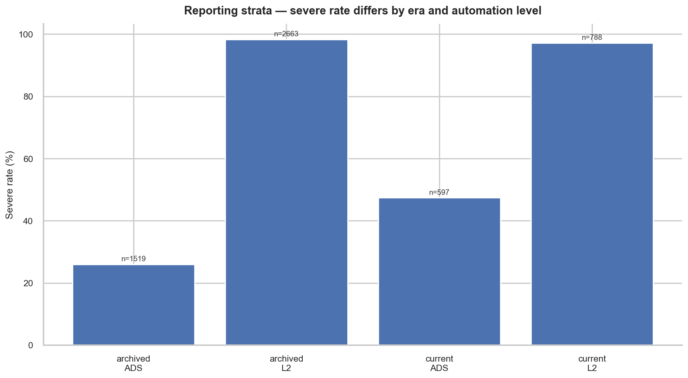
| Stratum | N | Severe Rate | Role |
|---|---|---|---|
| ADS — archived | 1,519 | 26.0% | Train |
| ADS — current | 597 | 47.4% | Test |
| L2 — archived | 2,663 | 98.3% | Train |
| L2 — current | 788 | 97.2% | Test |
A crash is labeled severe = 1 if any of the following is true:
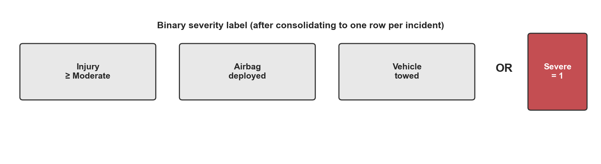
We used an OR rule because any one of these outcomes signals a crash worth prioritizing. We were careful never to use outcome words — "injured," "towed," "airbag deployed" — as input features, since those words directly describe the label itself. Using them would be data leakage.
We used a temporal split: all archived-era reports go to training, all current-era reports go to test. This directly simulates deployment — the model is trained on past data and evaluated on incidents that arrive after training.
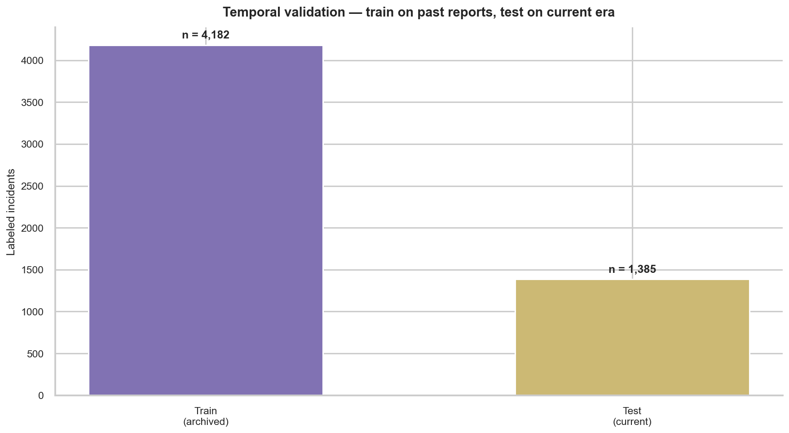
A random 80/20 split would let future patterns leak into the training set, artificially inflating AUC. The temporal split gives an honest picture of how the model performs when deployed on new reports.
Our first attempt was a single pooled logistic regression trained on all incidents together. The headline numbers looked okay. Then we broke it down by automation level.
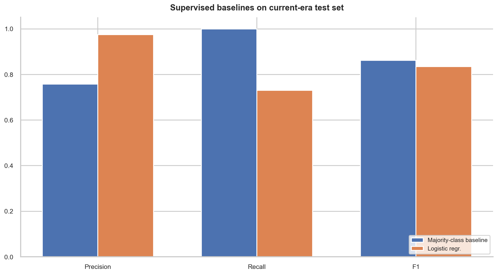
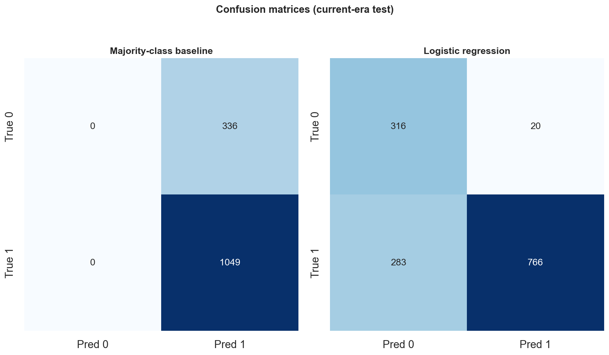
| Model | Precision | Recall | AUC | ADS FN | ADS FN-rate |
|---|---|---|---|---|---|
| Majority-class baseline | 0.757 | 1.000 | — | 0 | 0% |
| Pooled LR (ADS slice) | — | 0.0% | 0.510 | 283 | 100% |
| Pooled LR (L2 slice) | 0.977 | 100% | 0.927 | 0 | 0% |
The majority-class baseline (always predict severe) technically gets 0 false negatives — but it also flags every non-severe crash as severe, generating 336 false alarms. It provides no discrimination at all. Any useful model must do better on precision.
ADS and L2 are fundamentally different problems. L2 is 98% severe — the outcome is nearly determined by the automation level alone. ADS has a 26% severe rate in training that shifted to 47% in test. Mixing them lets the model learn a dangerous shortcut. The fix: train completely separate models per automation level using the temporal split within each group.
Tabular features — roadway type, weather, speed, pre-crash movement — give an AUC of 0.50 for ADS. That is random. The structured fields don't differ enough between severe and non-severe ADS crashes because most of them look the same on paper: street, stopped AV, passenger car. What does differ is the crash narrative — the free-text field describing what actually happened.
We extracted 21 binary scenario flags from the narrative text. Examples: Was the AV stopped? Was another vehicle approaching from behind? Was the crash at an intersection? Did the narrative use minor-damage language? Narrative features alone push AUC to 0.61. Combined with a tree model, they reach 0.92.
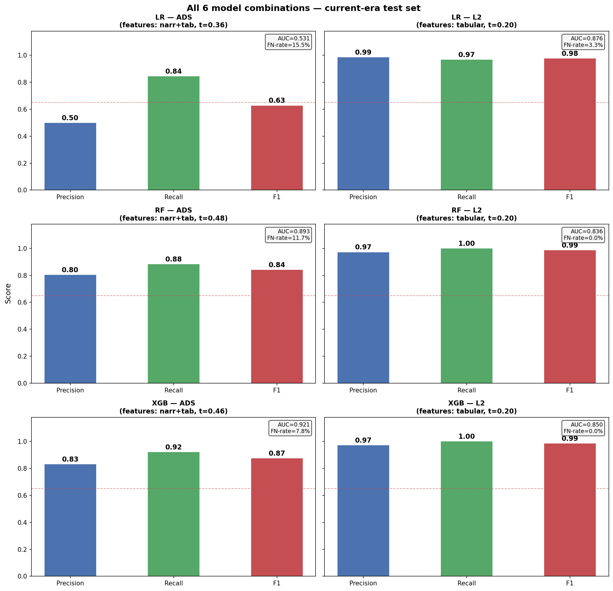
| Model | Precision | Recall | F1 | AUC | FN | FN-rate |
|---|---|---|---|---|---|---|
| LR — ADS | 0.499 | 0.845 | 0.627 | 0.531 | 44 | 15.5% |
| RF — ADS | 0.804 | 0.883 | 0.842 | 0.893 | 33 | 11.7% |
| XGB — ADS ★ | 0.831 | 0.922 | 0.874 | 0.921 | 22 | 7.8% |
| LR — L2 ★ | 0.985 | 0.967 | 0.976 | 0.876 | 25 | 3.3% |
| RF — L2 | 0.972 | 1.000 | 0.986 | 0.836 | 0 | 0.0% |
| XGB — L2 | 0.972 | 1.000 | 0.986 | 0.850 | 0 | 0.0% |
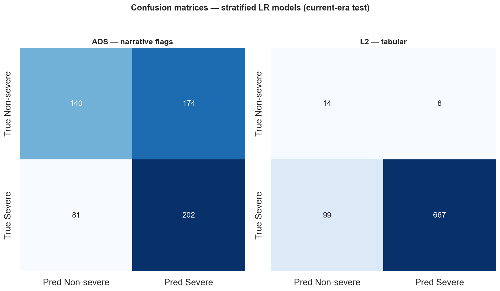
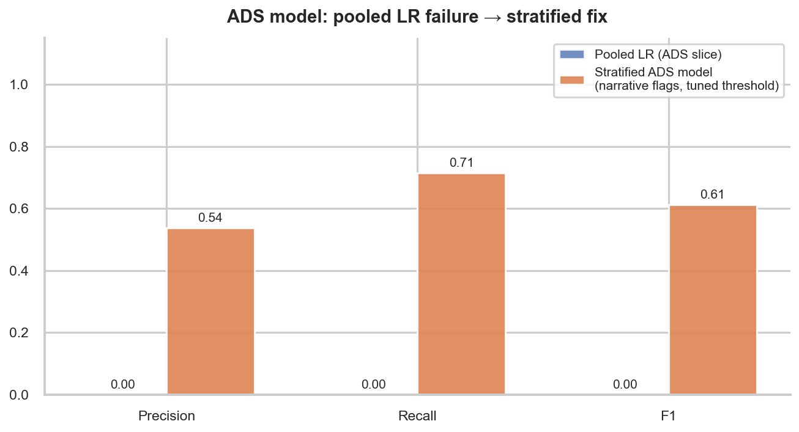
Logistic regression fits a single linear decision boundary. Predicting ADS severity requires combining narrative flags in non-linear ways — nav_av_stopped + nav_rear_approach together mean something very different from either alone. LR cannot represent this. Even with threshold tuning, LR on ADS gets AUC 0.531 — barely above random. XGBoost's decision trees learn these exact combinations.
For L2, the outcome is so dominated by one class (97–98% severe) that a linear boundary is entirely sufficient. Logistic regression gets AUC 0.876 with 98.5% precision.
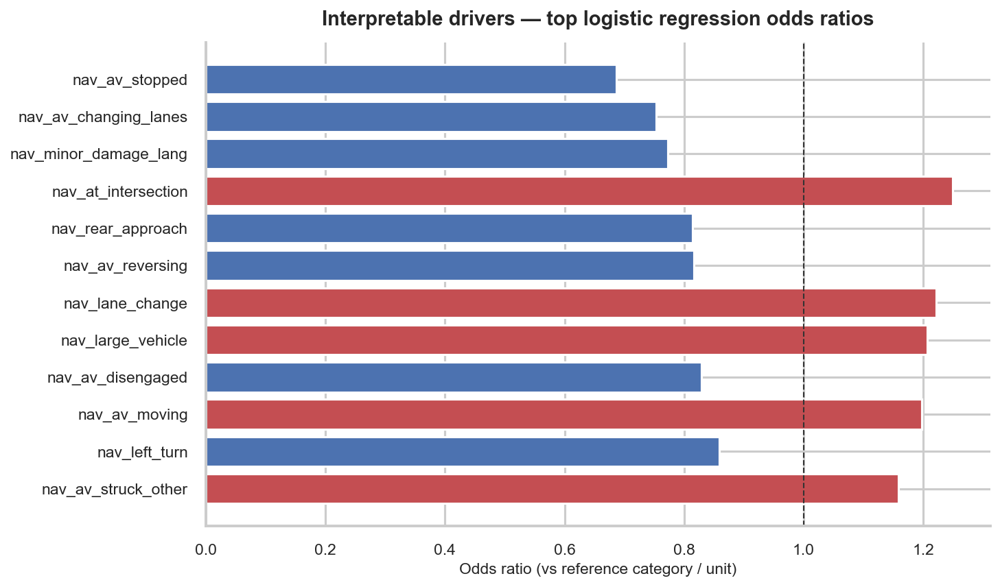
We profiled every severe crash the best models missed to understand the remaining blind spots.
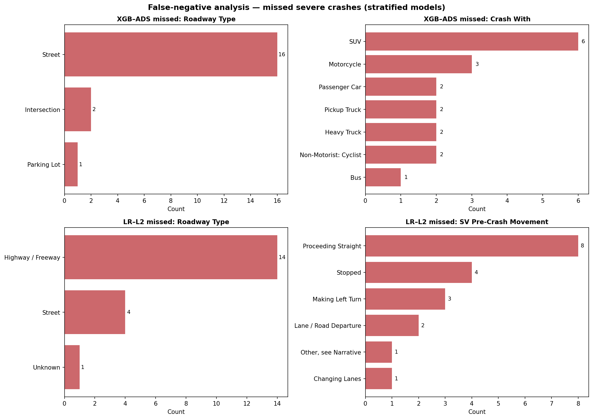
| Model | Total severe test | Missed (FN) | FN Rate | Top context |
|---|---|---|---|---|
| XGB [ADS] | 283 | 19 | 6.7% | Street, stopped AV, SUV crash partner |
| LR [L2] | 766 | 19 | 2.5% | Highway, both vehicles straight |
84% happened on a street. 63% had the AV stopped. The most common crash partner was an SUV. These are rear-end scenarios where the AV was passive — no narrative signal of unusual severity. The model undershoots the probability because the narrative looks like a minor incident even when the SUV's mass causes enough damage to trigger a tow.
74% happened on a highway, with both vehicles proceeding straight. These high-speed rear-end scenarios produce lower model confidence because they are underrepresented in the training distribution relative to intersection crashes.
Compared to the pooled baseline (304 total false negatives), the stratified pipeline reduces missed severe crashes by 94% — from 304 to 38.
We ran K-means clustering on all 2,116 ADS incidents using the same narrative + tabular feature space. The goal: discover natural crash scenario groups that safety engineers can act on without reading individual narratives.
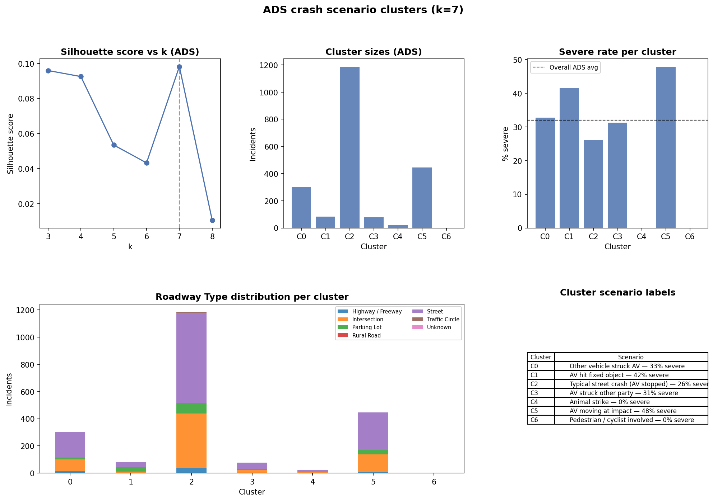
| Cluster | % of ADS | Severe Rate | Scenario |
|---|---|---|---|
| C5 | 21.1% | 47.8% | AV moving at impact — struck by other vehicle |
| C1 | 3.9% | 41.5% | AV hit fixed object (parking lot / disengagement) |
| C0 | 14.3% | 32.7% | Other vehicle struck stationary AV |
| C3 | 3.6% | 31.2% | AV struck other party (AV-at-fault) |
| C2 | 56.0% | 26.0% | Typical street crash — modal baseline |
| C4 | 1.0% | 0.0% | Animal strike — no injuries |
The two best models form a two-stage triage system:
A single pooled model trained on all data failed completely on ADS — 100% false-negative rate, 283 missed severe crashes. The root cause was a distribution shift that the model had no way to handle because it learned automation level as a severity proxy.
Stratified models — one per automation level, trained with a temporal split, using narrative features extracted from incident text — reduced total false negatives by 94%. XGBoost on ADS reaches AUC 0.921, precision 0.831, and recall 0.922. The cluster analysis surfaces seven distinct crash scenarios, each with a different severity profile and a different operational response.
The pipeline is ready to integrate into an SGO report triage workflow. The two additions that would most improve it further are more ADS training data and refined narrative extraction for CBI-redacted incidents.